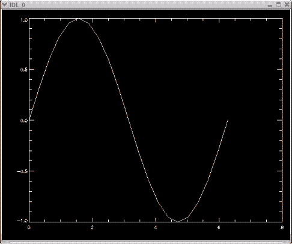

pyIDL
Python bindings for IDL, based on Andrew McMurry's python-IDL
Requires ITT's IDL and numarray
Download pyIDL source tarfile
Installation
unzup and unpack the gzipped tar archive
$ tar -xvzf pyIDL-0.7c3.tgz
set environment variables
(paths will depend on IDL installation and platform)
$ export IDL_VERSION = '7.0'
$ export IDL_DIR = '/usr/local/itt/idl'
$ export X11_LIBDIR = '/usr/lib/' (mac and linux only)
install the package
$ python setup.py build
$ python setup.py install
(alternatively, install with 'easy_install')
Documentation
import the idl class
>>> from pyIDL import idl
instantiate the idl class
>>> ri = idl()
get help
>>> print ri.doc()
Python-IDL bindings
eval(command):
execute an IDL command
get(name,[array,allowNone]):
fetch a variable from IDL
put(name,value,[array,type,allowNone]):
push a variable to IDL
who([name,local,stdout]):
print/return the IDL/local variables
help([name]):
print the IDL help message (for a variable)
delete(name):
destroy selected IDL variables
map([name]):
get the IDL data type mapping
prompt():
an interactive IDL session
_print(value):
print using the IDL print command
Copyright (c) 2009 California Institute of Technology. All rights reserved.
If you use this software to do productive scientific research that leads to
publication, we ask that you acknowledge use of the software by citing the
following paper in your publication:
"pyIDL: binding IDL to python", Michael McKerns, unpublished;
http://www.its.caltech.edu/~mmckerns/software.html
push python variables into IDL and interact with IDL scripting language
>>> from numarray import *
>>> x = []
>>> for i in range(21): x.append(i*pi/10)
...
>>> ri.put('x',x)
>>> ri.eval('y = sin(x)')
>>> ri.eval('plot, x,y')
use the interactive prompt
>>> ri.prompt()
IDL interface:
% At $MAIN$
X DOUBLE = Array[21]
Y DOUBLE = Array[21]
Compiled Procedures:
$MAIN$
Compiled Functions:
IDL> IF x[0] LT 1 $
IDL> THEN print, x
0.0000000 0.31415927 0.62831853 0.94247780 1.2566371
1.5707963 1.8849556 2.1991149 2.5132741 2.8274334
3.1415927 3.4557519 3.7699112 4.0840704 4.3982297
4.7123890 5.0265482 5.3407075 5.6548668 5.9690260
6.2831853
IDL> exit
check variables in IDL session
>>> ri.who().keys()
['Y', 'X']
>>> ri.who('y')
[0.0, 0.3090169943749474, 0.58778525229247314, 0.80901699437494745,
0.95105651629515353, 1.0, 0.95105651629515364, 0.80901699437494745,
0.58778525229247325, 0.30901699437494751, 1.2246063538223773e-16,
-0.3090169943749469, -0.58778525229247303, -0.80901699437494734,
-0.95105651629515353, -1.0, -0.95105651629515364, -0.80901699437494756,
-0.58778525229247336, -0.30901699437494762, -2.4492127076447545e-16]
get variables back into python from IDL
>>> sinx = ri.get('y')
use shortcuts for put, eval, and get
>>> ri.z = 0.5
>>> ri('print, z')
0.50000000
>>> ri.z + 1
1.5
delete variables from IDL
>>> ri.delete('x')
>>> ri.delete('y')
use IDL function/procedure directly from python
>>> ri.sin(x)
[0.0, 0.3090169943749474, 0.58778525229247314, 0.80901699437494745,
0.95105651629515353, 1.0, 0.95105651629515364, 0.80901699437494745,
0.58778525229247325, 0.30901699437494751, 1.2246063538223773e-16,
-0.3090169943749469, -0.58778525229247303, -0.80901699437494734,
-0.95105651629515353, -1.0, -0.95105651629515364, -0.80901699437494756,
-0.58778525229247336, -0.30901699437494762, -2.4492127076447545e-16]
Versions
0.7c3: 03/16/09
added support for idl_7.0
installs with setuptools, if available
links to easy_install build of numarray
more gentle install & dependency failure
sensible path defaults for linux and mac
slight change in license
0.6: 07/18/07
added support for idl_6.4
fixed boolean support in direct IDL function/procedure calls
0.5: 04/18/07
fixed support for python2.5
0.4.1: 12/01/06
fixed support for mac os
0.4: 10/06/06
added support for idl_6.3
improved support for NumPy
removed dependency on Numeric
0.3: 06/09/06
improved support for Numeric
added _print
extended examples
0.2: 05/19/06
added examples directory
support for 64-bit platforms
shortcuts for put, get, eval
access IDL functions/procedures from python
0.1: 06/21/05
initial; python bindings for RSI's IDL
interactive IDL prompt
|

|